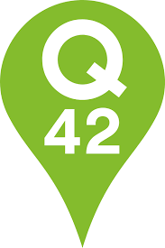

Visiting Q42
Q42
About Q42
Q42 is a development bureau who make really awesome products using tech. They also give attention to accessibility.
Summary of Q42
During this lecture Q42 talked about how they keep accessibility in mind when designing products. They showed us a graph and turned it into sound. You could here the way the graph goes. another project was about a very interactive site they created for a museum. The site was very animated because the client wanted a site that did not look like a site. They added a prefers reduced motion. After they finished the presentation we had some drinks and food.
Conclusion: what I learned
Q42 seems like a very interesting company. Their main focus is creating something with tech, design they let another company do. What they showed us tody is that you can be a development bureau and still put focus on accessibility for different products.